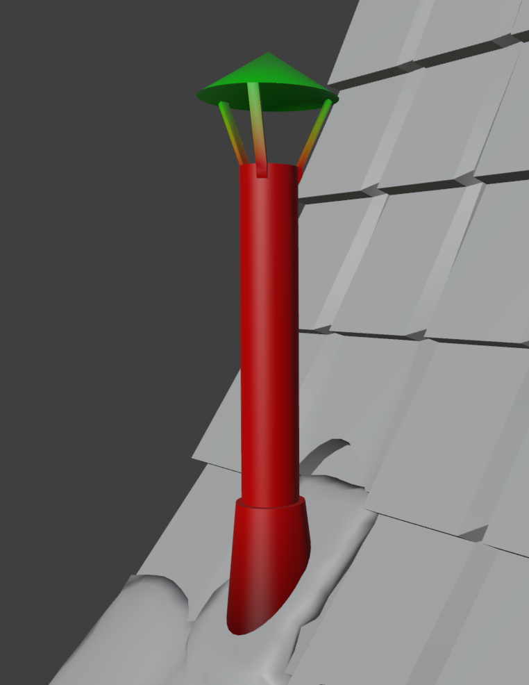

Updated May 10, 2026
This is a slice of a game centered around delivering packages to hard-to-reach places by drone - in this level, you fly against the wind to deliver a box to a family in the mountains.

The controller for the drone and its grabber chain use physics bodies to simulate forces like gravity and directional input, allowing the weight of the attached box bouncing in space to pull the drone around. The chain animates procedurally when activated, enabling physics per link once they animate into place at the top of the chain. When it's recalled up again, the procedural animation happens in reverse.

In this level, wind increases as you climb higher, requiring flight to be handled precisely. If you break a fragile package (or knock over something in the yard), the recipient might be unhappy. In addition to the physics-based controller, I added a few animations to the drone, like the wobble when colliding with some impassable geometry.

The chimney is animated using a vertex shader to drive deformation, timed to match the smoke, which is displaced and faded out using its own shader. The smoke uses a Fresnel alpha blend to fade out at the edges. I used custom shaders throughout the environment, particularly around the house and characters.

The chimney shader uses vertex color to control where the pipe bulges with smoke (red) and where the upper portion lifts (green).

Like the chimney, the trees are animated using a vertex shader that distinguishes between trunk and foliage, displacing the foliage more in the wind.
A custom surface shader with Fresnel and a noisy normal map is used to give the bears a warm, fuzzy appearance.


The water shader in this level uses a variety of techniques, including parallax to fake depth, displaced surface (skybox) reflections with Fresnel, depth-based opacity, surface animated noise, and Voronoi caustics (you can see a real-time water shader with similar techniques at my shadertoy). The ripples around the shorelines are a second shader rendered on a separate piece of geometry, with UV-based animation.

In addition to the other environmental details I created for this project, I wrote a custom shader for the terrain that would blend different surfaces together based on various paramters, such as normal direction, height, and procedural noise.
© 2026 Noah Gunther